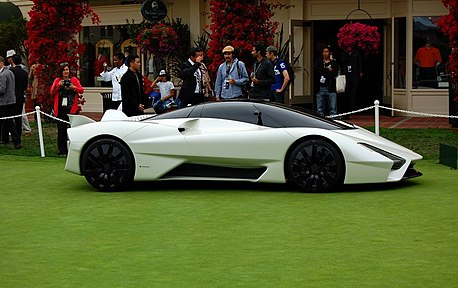

SSC Tuatara
Гиперкар американской компании Shelby Super Cars. Прототип официально был представлен в 2011 году в Китае в городе Шанхае совместно с открытием там официального дилера SSC Asia. В Северной Америке автомобиль был представлен на ежегодном конкурсе Пеблл Бич в городе Монтерей. Компанией позиционируется как потенциальный быстрейший в мире автомобиль серийного производства. Производство запущено в 2014 году и продолжается по сей день.
